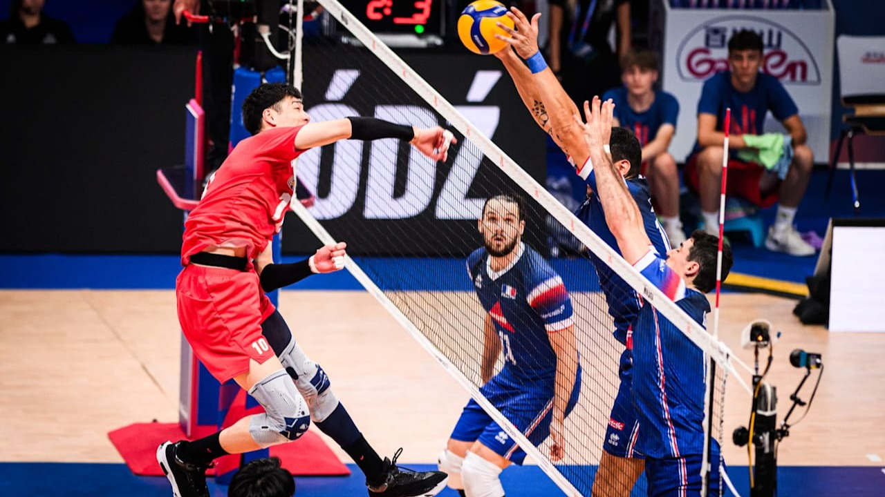
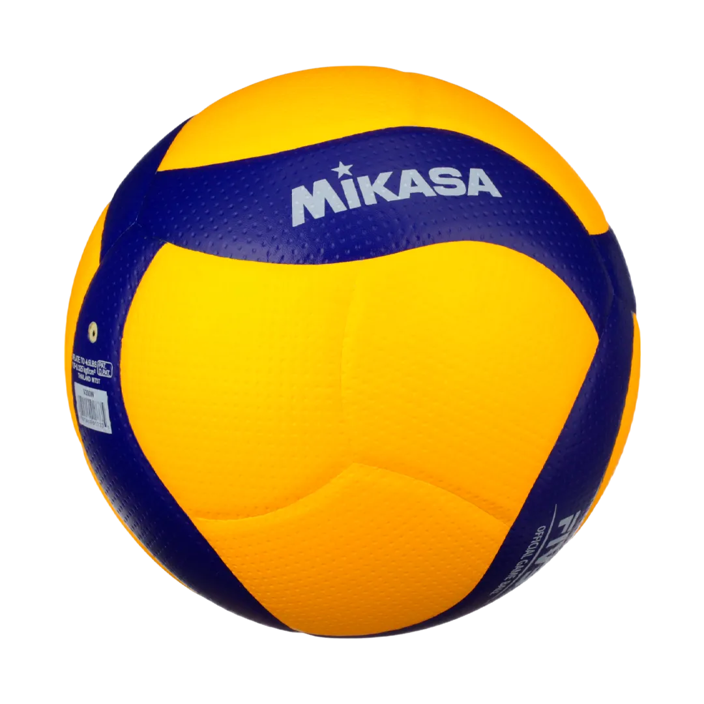

Creado por el autor
La emoción de la Volleyball Nations League
La Volleyball Nations League es una de las competiciones internacionales más emocionantes del vóley. En este torneo, las mejores selecciones del mundo se enfrentan para demostrar su talento, estrategia y trabajo en equipo. Cada partido ofrece grandes jugadas, remates potentes y momentos llenos de emoción para todos los aficionados.

El vóley es un deporte que necesita coordinación, concentración y esfuerzo. Los jugadores deben trabajar juntos para defender cada punto, organizar sus ataques y superar a sus rivales. En la VNL, cada selección busca demostrar su nivel y conseguir importantes victorias. La comunicación y el trabajo en equipo son fundamentales para alcanzar el éxito dentro de la cancha.
Además de la competencia, la VNL permite disfrutar del talento de grandes jugadores y conocer diferentes estilos de juego. La pasión de los equipos y el apoyo de los aficionados hacen que cada encuentro sea una experiencia especial. Cada edición del campeonato reúne a selecciones que luchan por llegar a lo más alto y dejar una huella en el vóley internacional.